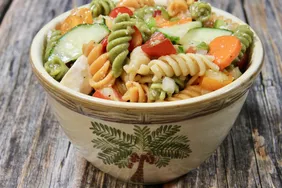

Home
Fresh Garden Salad

Description
This fresh garden salad is crisp, healthy, and quick to make. Enjoy a refreshing mix of greens and vegetables tossed in a light dressing.
Ingredients
- 2 cups lettuce (chopped)
- 1 tomato (sliced)
- 1 cucumber (sliced)
- 1/2 red onion (thinly sliced)
- 1/2 cup shredded carrots
- Salt and pepper to taste
- 2 tablespoons olive oil
- 1 tablespoon lemon juice or vinegar
Steps
- Wash and chop all vegetables.
- Add lettuce, tomato, cucumber, onion, and carrots to a bowl.
- Drizzle with olive oil and lemon juice or vinegar.
- Season with salt and pepper.
- Toss gently to combine and serve immediately.